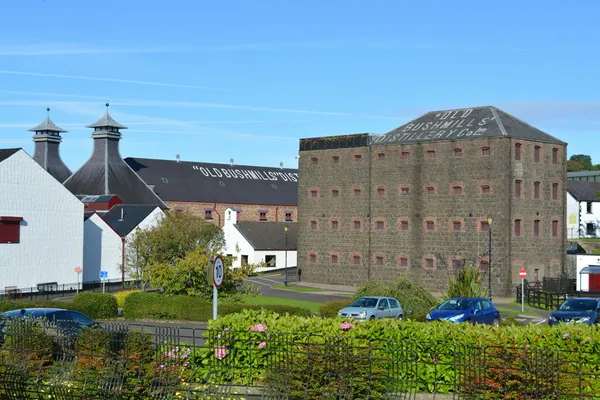

Ireland: Irish whiskey

Photo: Derek Lynn on Unsplash
Irish whiskey is made across the island of Ireland and is the country's best-known spirit after a strong revival since the 2010s.
How it's made
Must be distilled and aged at least three years in wood in Ireland. Single pot still whiskey, made from malted and unmalted barley in pot stills, is a uniquely Irish style.
Single pot still whiskey, unique to Ireland, uses a mash of malted and unmalted barley, usually triple-distilled in copper pot stills for a creamy, spicy spirit. Grain whiskey is made in column stills, and single malts from malted barley alone.
History
Ireland is one of the oldest whiskey-making countries, and in the 1800s Dublin whiskey was among the most famous spirits in the world. Trade wars, Prohibition in the USA and the loss of Commonwealth markets ruined the industry, until by the 1970s only Midleton and Bushmills were left; since 2010 dozens of new distilleries have opened.
Ageing and label terms
At least 3 years in wooden casks on the island of Ireland. Ex-bourbon casks dominate, with sherry, port, rum and wine casks used for finishing; age statements refer to the youngest whiskey.
Styles
Blended (the largest category, e.g. Jameson), single pot still (Redbreast, Green Spot), single malt (Bushmills) and single grain.
Rules and protected names
Irish Whiskey is a protected geographical indication covering the Republic and Northern Ireland. It must be distilled and aged on the island for at least 3 years and bottled at 40% ABV or more.
How to serve and classic cocktails
Neat, with ginger ale and lime, or in classics such as the Irish Coffee, the Tipperary and the Irish whiskey sour.
With food
Smoked salmon on soda bread, Irish stew, mature Cheddar and apple or bread-and-butter puddings.
Good to know
Irish producers usually spell it 'whiskey' with an 'e'. Triple distillation is common but not required by law.
Producers
- Midleton (Jameson, Redbreast)
- Bushmills
- Teeling
- Tullamore D.E.W.
Bottles to try
Redbreast 12 Year Old
Classic single pot still: dried fruit, spice, toasted nuts and sherry.
Serve: Neat
Jameson Irish Whiskey
Smooth and light: vanilla, apple, toasted wood and a little spice.
Serve: With ginger ale and lime
Teeling Small Batch
Vanilla, sweet spice, ripe banana and a soft rum sweetness.
Strength: 46% · Age and cask: No age statement, ex-bourbon casks then rum casks
Teeling opened the first new distillery in Dublin for over a century in 2015. This blend of malt and grain whiskey is finished in Central American rum casks and bottled without chill filtration.
Serve: Neat, with ginger ale or in an Irish Coffee
Bushmills 10 Year Old Single Malt
Honey, vanilla, green apple and soft milk chocolate.
Strength: 40% · Age and cask: 10 years, mainly ex-bourbon casks with some ex-sherry
Made at the Old Bushmills Distillery in County Antrim from malted barley alone and distilled three times, which gives a light, smooth spirit. A good introduction to Irish single malt.
Serve: Neat, with a splash of water or with ginger ale
Green Spot Single Pot Still
Green apple, pear, pot-still spice, barley and a touch of sherry sweetness.
Strength: 40% · Age and cask: No age statement, ex-bourbon and ex-sherry casks
One of the last 'bonded' whiskeys, made for the Dublin wine merchants Mitchell & Son and distilled at Midleton. Single pot still Irish whiskey uses both malted and unmalted barley, which gives a creamy, spicy texture.
Serve: Neat or with a splash of water
Powers Gold Label
Spicy and full: honey, green apple, clove and a peppery pot still bite.
Strength: 43.2% · Age and cask: No age statement, ex-bourbon casks
A blend built around a large share of single pot still whiskey, giving more spice and body than most Irish blends. Powers began at John's Lane in Dublin in 1791 and is now made at Midleton in County Cork.
Serve: Neat, with ice, or in an Irish Coffee
Tullamore D.E.W. Original
Light and smooth: green apple, vanilla, honey and a gentle spice.
Strength: 40% · Age and cask: No age statement, ex-bourbon and ex-sherry casks
A triple-distilled blend of three whiskey types: pot still, malt and grain. The brand returned to its home town of Tullamore in County Offaly when a new distillery opened there in 2014.
Serve: Neat, on ice, with ginger ale, or in an Irish Coffee
Jameson Black Barrel
Rich and smooth: toffee, vanilla, toasted wood, dried fruit and nutmeg.
Strength: 40% · Age and cask: No age statement; double-charred ex-bourbon barrels and ex-sherry casks
Made at the Midleton distillery in County Cork. Some of the bourbon barrels are given a second, heavy charring before filling, which brings out more caramel and vanilla flavour.
Serve: Neat, on ice or in an Irish Old Fashioned
Yellow Spot 12 Year Old
Rich and sweet: honey, peach, apricot, toasted almond and a creamy pot still spice.
Strength: 46% · Age and cask: 12 years, ex-bourbon, ex-sherry and Málaga wine casks
A single pot still whiskey made at Midleton from malted and unmalted barley. The Spot names go back to the Dublin wine merchants Mitchell & Son, who marked the age of their casks with dabs of coloured paint.
Serve: Neat
More whisky regions
Explore all spirits in the interactive guide
The Wine Reference newsletter
New wines, stories and career guides, one email a week at most.
Over 18s only. Unsubscribe any time with one click. Your email is stored securely by Kit and never shared.
Support The Wine Reference
This guide is free, with no paywall. If it helped you choose a bottle, you can buy me a glass and keep it growing.
🍷 Buy me a glass